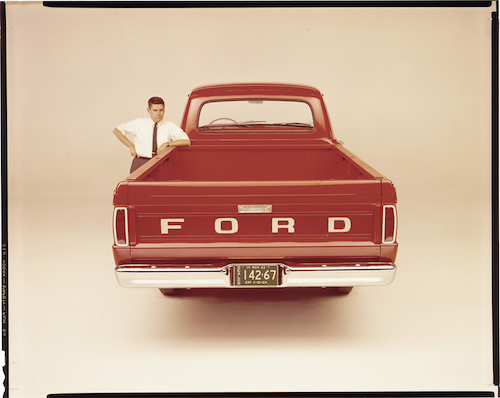
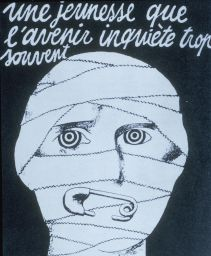
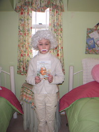

Menu
Home
Ford Motor Co.
Jose Cuervo
Other
About
Natalie Zak
— ↓ Choose your adventure ↓
Copywriter
(1.) The best-selling truck for 46 years 
(2.) Mai Tais and a man on the street
(3.) Please remove the punk band from the newsroom 
(4.) Est. Buffalo, NY 1997 